Brady Township Troutville Borough Water Association
This page is provided as a courtesy to our customers. Readings are updated periodically and may be delayed or unavailable, so it should not be relied on as a real-time monitor. For outages or emergencies, contact the Water Association office directly.